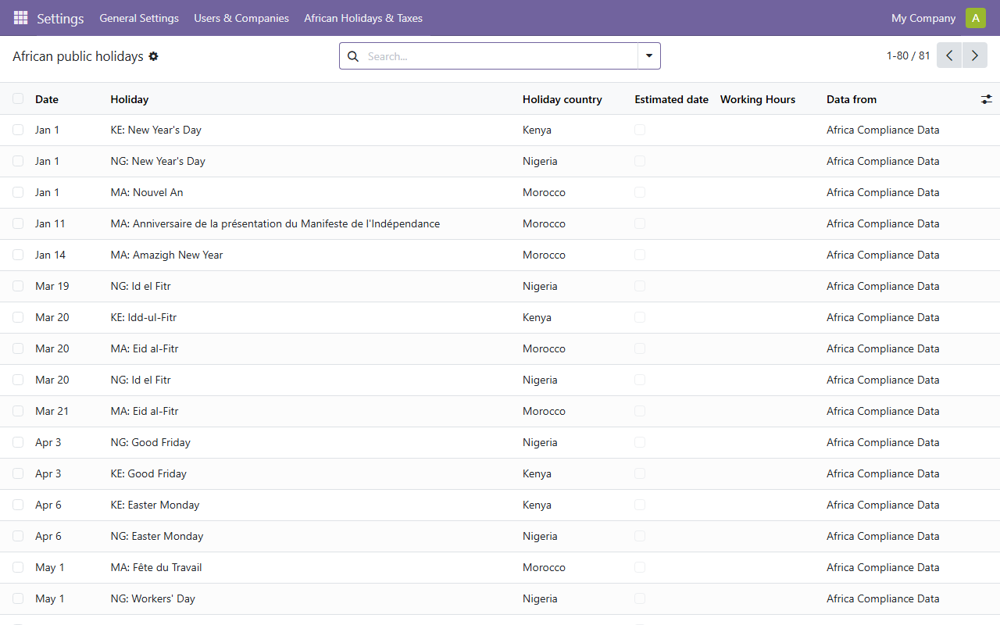
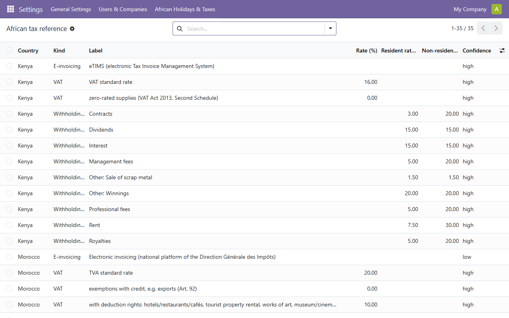
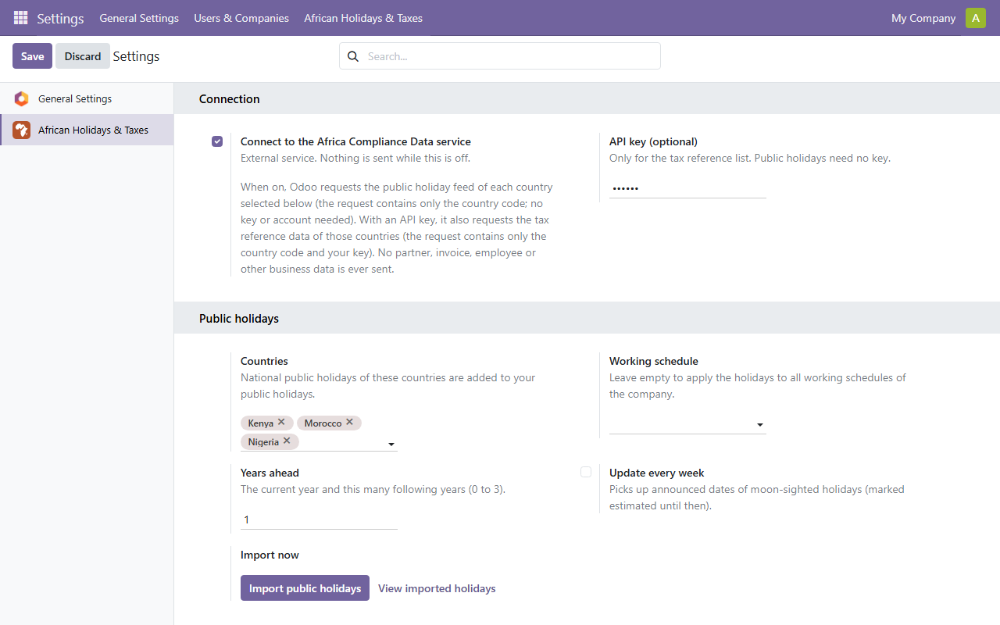

The national public holidays of 54 African countries in your Odoo working schedules and Time Off, kept up to date, with an optional reference list of VAT, withholding tax and e-invoicing data.


This module uses an external service, Africa Compliance Data. Nothing is sent until an administrator turns the connection on in Settings.

Reference information with its sources, not legal or tax advice: check the cited source before relying on a value. Support: support@africacompliancedata.com